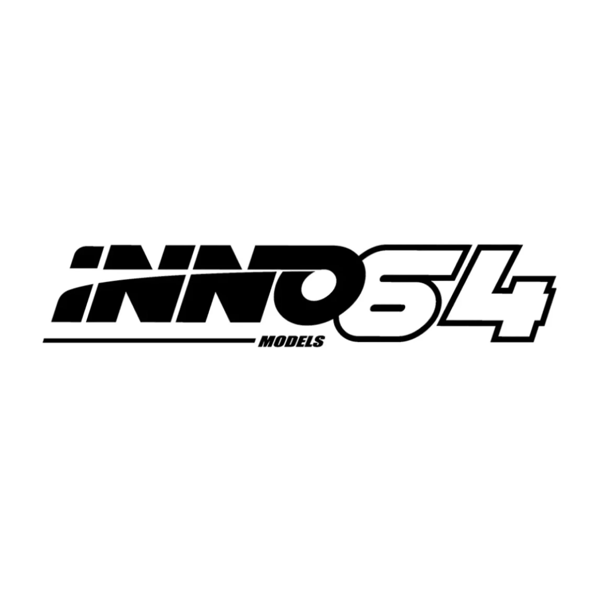

A compact display scale with detailed replicas.
DIECAST DISTRICT / BRAND ENCYCLOPEDIA 09

Discover the world of INNO64.
A collector's guide to detailed 1:64 scale models, JDM icons, modified builds and motorsport legends.
09THE COLLECTOR SERIES
QUICK NAVIGATION
Inside this collector's guide.
01 / THE BRAND
What is INNO64?
INNO64 is the 1:64-focused model line associated with INNO-Models. The brand's official story describes a team driven by automotive enthusiasm, model-making craftsmanship and a goal of capturing the character of real vehicles in miniature.
Its range includes both street and competition subjects. The official catalogue lists many vehicle marques and themes, including Honda, Nissan, Toyota, Mazda, Mitsubishi, Porsche, BMW, Mercedes-Benz, Ford and more.
Japanese icons, tuner builds and motorsport subjects.
Paint, wheels, interior touches and authentic liveries.
02 / BRAND DNA
What makes INNO64 special?
JDM culture
Many releases celebrate Japanese performance cars, including Skyline GT-R generations, Honda models, Mazda sports cars and classic Toyota machines.
Modified legends
Widebody and tuning themes appear throughout the range, including collaborations and licensed designs associated with names such as Liberty Walk, Pandem / Rocket Bunny and Top Secret.
Motorsport heritage
Race cars and period-correct competition liveries bring touring-car, endurance and regional racing stories to a small display scale.
Special editions
Some releases are tied to events, collaborations or exclusive colourways. Always check the exact product name and packaging rather than assuming every special edition is rare.
03 / THE COLLECTION
Popular model themes
INNO64's catalogue changes over time. These are recurring themes and examples, not a complete list of every release.
Japanese performance
Nissan Skyline GT-R, Honda Civic and Accord, Toyota Supra, Mazda RX-7 and other enthusiast favourites.
Custom & widebody
Modified cars and builds linked to Liberty Walk, Pandem / Rocket Bunny, RWB and Top Secret themes.
Motorsport liveries
Competition cars with sponsor graphics, race numbers and designs inspired by real racing entries.
Collaborations & events
Selected releases created around partners, collector events and special presentation sets.
Collector note: A model's theme, release name and edition details matter. Two cars based on the same real vehicle can be different releases with different wheels, paint, decals or packaging.
04 / SCALE & CRAFT
Understanding INNO64's 1:64 scale
At 1:64 scale, one unit on the model represents 64 units on the real vehicle. For example, a real car that is 4,480 mm long would be about 70 mm long as a mathematically exact 1:64 model.
Details worth checking
- Body shape and proportions
- Wheel design and stance
- Paint finish and decal alignment
- Headlights, tail lamps and grille
- Interior and cabin details
- Base, packaging and model identification
Why details vary
Different releases may use different materials, construction methods or design priorities. Read the individual product description to confirm whether a model is diecast, resin or another construction type and what accessories are included.
Do not assume every INNO64 release has identical opening parts, rolling performance or display accessories.
05 / BEGINNER'S GUIDE
How to start collecting INNO64
Choose a theme
Start with cars you genuinely like: Skyline GT-Rs, Hondas, Supras, RX-7s, touring cars or tuner builds.
Research the exact release
Check the full model name, casting, colour, livery, release edition and product photographs before buying.
Buy from a trusted seller
Look for clear real-product photos, a proper description, seller details and a sensible return policy. Be cautious with listings that use only promotional images.
Keep the packaging safe
Store the box and protective case away from moisture, direct sunlight and heavy pressure. Handle the model carefully by its base where practical.
Quick buying checklist
- Is the model name and scale clearly stated?
- Do the photos match the exact colour and edition?
- Are the box, case and accessories included as advertised?
- Is the seller's reputation and return policy clear?
- Does the price make sense compared with other listings?
06 / COLLECTOR KNOW-HOW
Chase editions, value & care
Are special editions always valuable?
No. An event edition, limited colour or chase-style release may attract collector interest, but value depends on demand, availability, condition, authenticity and the specific model. A high price does not automatically mean a model is rare or a good purchase.
How should you display your models?
Use a stable shelf or display case, avoid direct sunlight and dusty or damp locations, and keep models away from places where they can be knocked off. Clean the display area gently; avoid harsh chemicals on paint, clear parts or decals.
What should stay with the model?
Keep original packaging, inserts, display cases and any included accessories together. They help you identify the release later and keep your collection organised.
07 / QUICK ANSWERS
INNO64 FAQs
Is INNO64 mainly a 1:64 brand?
INNO64 is strongly associated with 1:64 scale models. INNO-Models' wider official catalogue also lists other scales and product types, so check the specific product listing.
Does INNO64 only make JDM cars?
No. Japanese cars are a major theme, but the catalogue also includes vehicles and subjects from other manufacturers and motorsport categories.
Are all INNO64 models diecast?
Do not assume that. The official catalogue includes product-type filters such as diecast and resin. Check the construction details for the exact release.
Should beginners buy chase editions first?
Not necessarily. Start with the cars and designs you enjoy. Learn the release details and typical market prices before spending extra on a special variant.
Where can I verify a model?
Compare its name, photographs and product details with INNO-Models' official catalogue and trusted retailer listings. Keep your purchase receipt when possible.
REFERENCE DESK
Learn more
- INNO-Models — Our Story
- INNO-Models — Official Product Catalogue
- INNO-Models — 1:64 Collection
- Toy East — INNO64 brand profile
Diecast District is an independent collector-education project and is not affiliated with or endorsed by INNO-Models or INNO64. Product ranges and release details can change; always verify information with the manufacturer or seller.